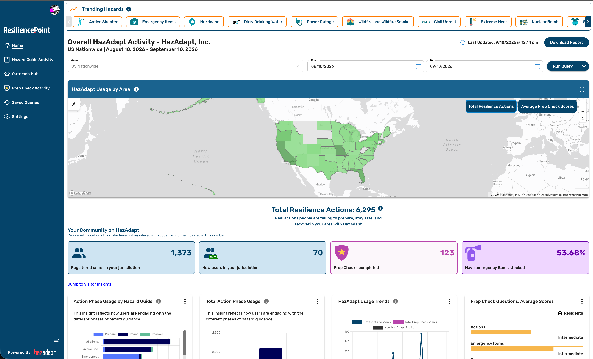
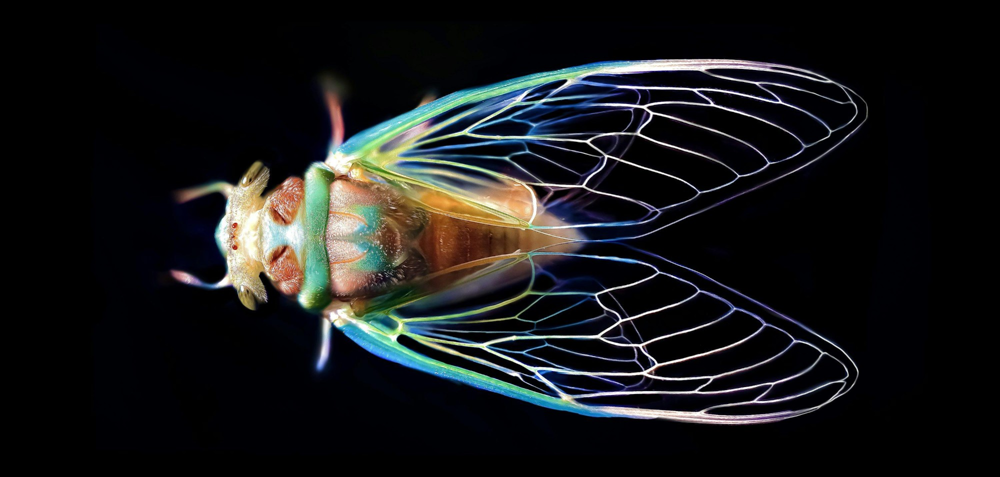
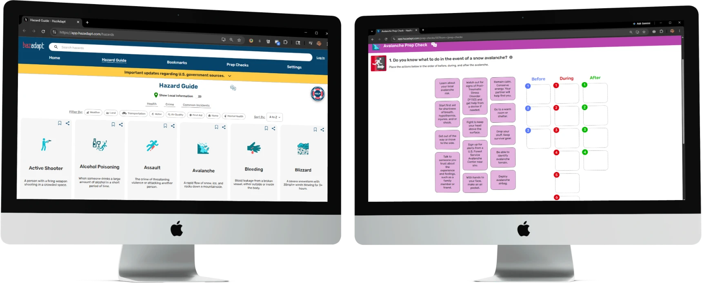
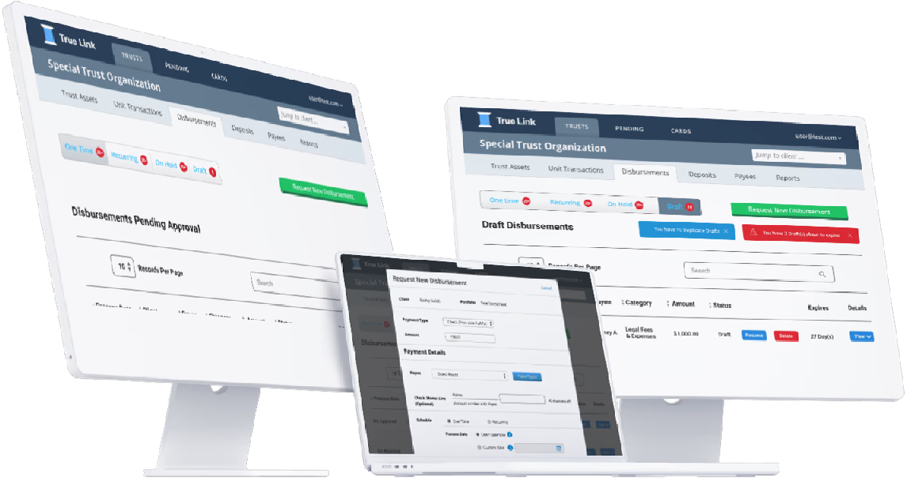
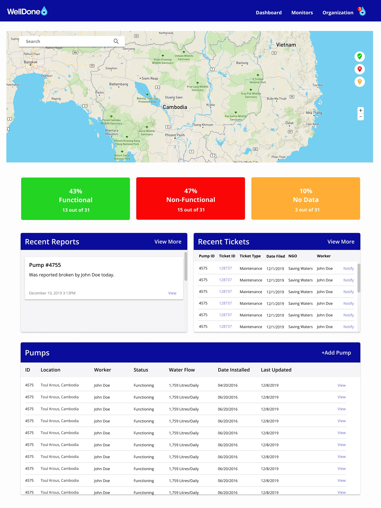

ResiliencePoint
Making Sense of the Chaos
We built what we thought people needed. Then the evidence changed the product.

Columbus, Ohio · raised in Detroit
UX Designer / Creative Technologist
I design software, make art, build things, break things, and have a hard time leaving anything alone when I know it could work better.
I'm a designer, artist, developer, and general maker of things. I started in software development, moved into UX because I wanted more room to be creative, and apparently never learned how to pick one thing and stick with it.
I've spent the last 8+ years designing, building, testing, breaking things, and figuring out how to make them work better. Outside of UX, I make art, build 3D prints, mess around with code, and start projects because I thought, 'I wonder if I could make that.'
Usually I can. Sometimes I absolutely cannot. Either way, I'm probably going to try.

Making Sense of the Chaos
We built what we thought people needed. Then the evidence changed the product.

Local safety information and bite-sized prep activities — two product lines built to make preparedness something people actually do.

Financial tools built to protect autonomy, not just assets.

Turning a nonprofit's scattered well and sensor data into a monitoring workflow people can actually act on.
Apparently I can't leave things alone.
Detroit-born, lifelong artist, and someone with a bad habit of needing to know how things work. That curiosity took me from software development into UX, and it still shows up in accessibility reviews, 3D printing experiments, and whatever I'm building at 1am.
| Organization | Role |
|---|---|
| HazAdapt | Lead UX Designer |
| Pentagon Federal Credit Union | Creative Technologist |
| JPMorgan Chase | UX Designer |
| True Link Financial | UX Designer |
| Move HQ | UX Designer |
| Operation Code | UX Designer & Evangelist |
| Expedient | Associate Analyst |